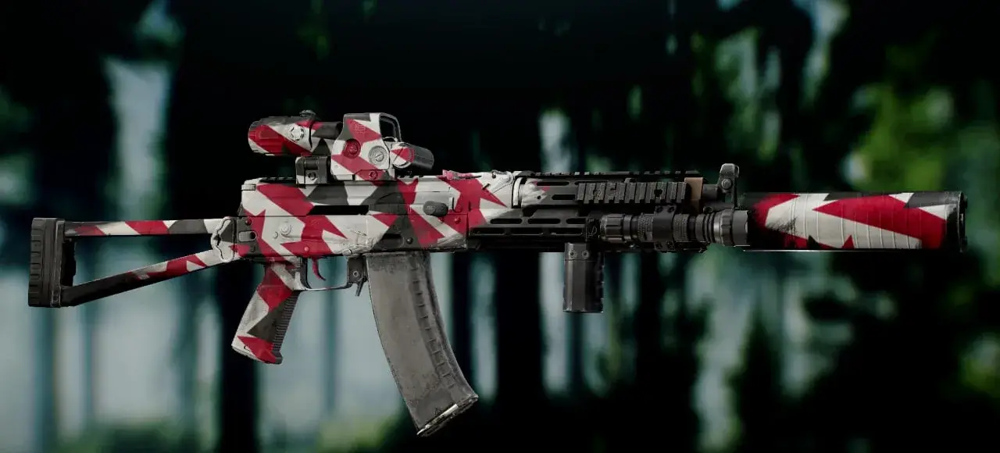
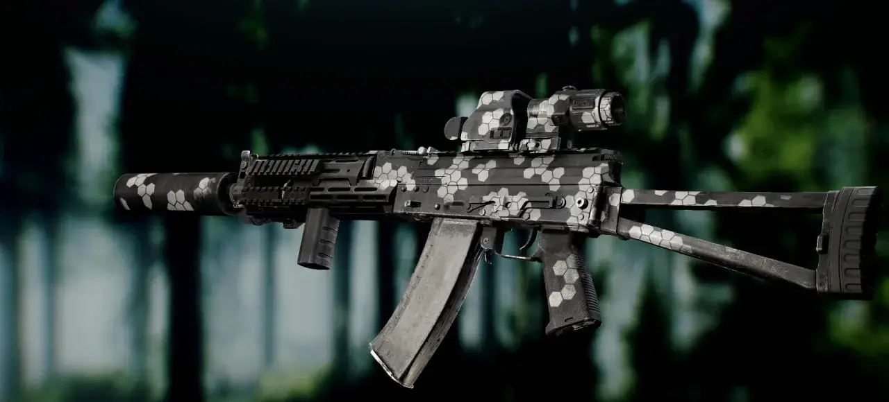
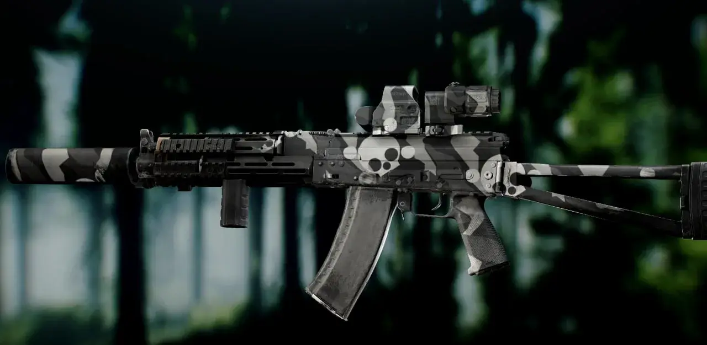
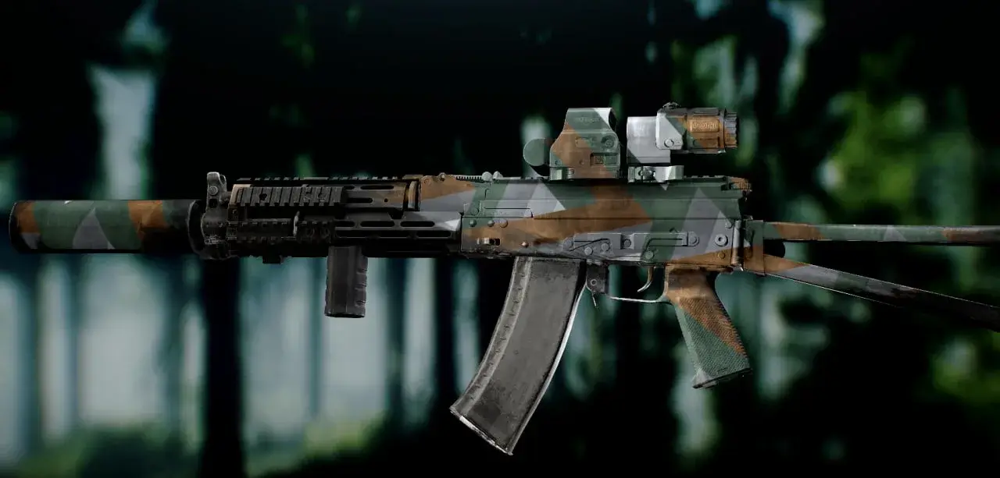

Hired Ops Camouflage Paints Collection
- Downloads
- 1,750
Perhaps few people knew, but Big Silly Goose also has games besides THE CITY. One of them is the free-to-play shooter Hired Ops, which was essentially a re-release of Contract Wars, one of the popular browser games of the early 2010s.
The addon adds the ability to paint your weapons with camos that existed in Hired Ops (camouflage patterns, not preset). Many of these camos are also available in Contract Wars, although I couldn’t find any specifically from Contract Wars, but I think you’ll find enough.
In fact, THE CITY itself was born, to some extent, thanks to these games. These skins will be a great addition to your weapons and will create a unique style for the game. Enjoy.
Screenshots:




Version
1.0.0
- Added all available camouflage patterns from the Hired Ops game (more than 200+)